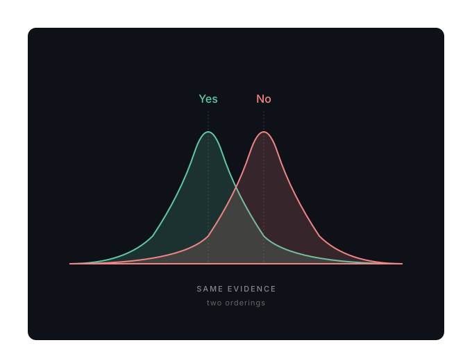
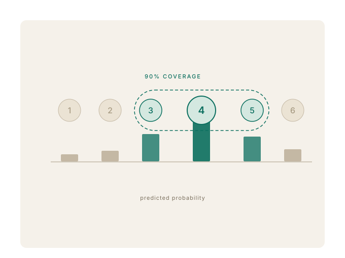
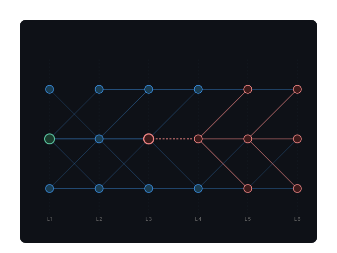

About
I'm an incoming PhD researcher at UCL's Robot Perception and Learning Lab, supervised by Prof. Dimitrios Kanoulas. My research focuses on foundational world models for robotics: how autonomous systems learn to perceive, predict, and act in environments they have never seen before.
I work at the intersection of world models, open-ended learning, and embodied AI, with applications in autonomous systems for extreme environments such as disaster response, planetary exploration, and deep sea. Alongside this, I do research on language models, focusing on reliability, hallucination, and the information-theoretic structure behind their failures.
Currently I'm an ML Engineer at the London Stock Exchange Group (Advanced Data Analytics) and a part-time Research Scientist at Hassana Labs.
News
- Oct 2026Starting my PhD at the UCL Robot Perception and Learning Lab.
- Apr 2026Paper accepted at ICML 2026: Predictable Compression Failures: Why Language Models Actually Hallucinate.
- 2026Awarded EPSRC TechExpert PhD studentship at the UCL CDT in Cyber-Physical Risk.
- 2025Paper accepted at EMNLP 2025: Beyond the Score.
Publications


Open Source
Résumé
-
Oct 2026 –
UCL · PhD in Computer Science
Foundational world models for robotics, supervised by Prof. Dimitrios Kanoulas.
-
2025 – present
Hassana Labs · Research Scientist (part-time)
LLM reliability and hallucination research. Co-author on ICML 2026 paper. Co-built Berry, an open-source hallucination risk calculator (1.6k+ ★).
-
2024 – present
London Stock Exchange Group · Machine Learning Engineer
Advanced Data Analytics team. End-to-end ML systems: time-series forecasting (ARIMAP, 20% RMSE reduction), RAG-based internal chatbot, NLP+LLM incident-triage pipeline on AWS SageMaker.
-
2024
King's College London · Researcher
Uncertainty-calibrated LLMs for automated essay scoring; led to EMNLP 2025 paper.
-
2023
London Stock Exchange Group · DevOps Engineer Intern
Cloud migration with Helm, Terraform, Kubernetes. AWS training in LLMs.
-
2022
Imperial College London · Undergraduate Researcher (UROP)
Machine learning for wildfire prediction and propagation at the Leverhulme Centre for Wildfires. £2,500 funded.
-
2020 – 2023
Queen Mary, University of London · BSc Computer Science (First Class)
Final-year project: model-based reinforcement learning with curiosity-driven exploration.